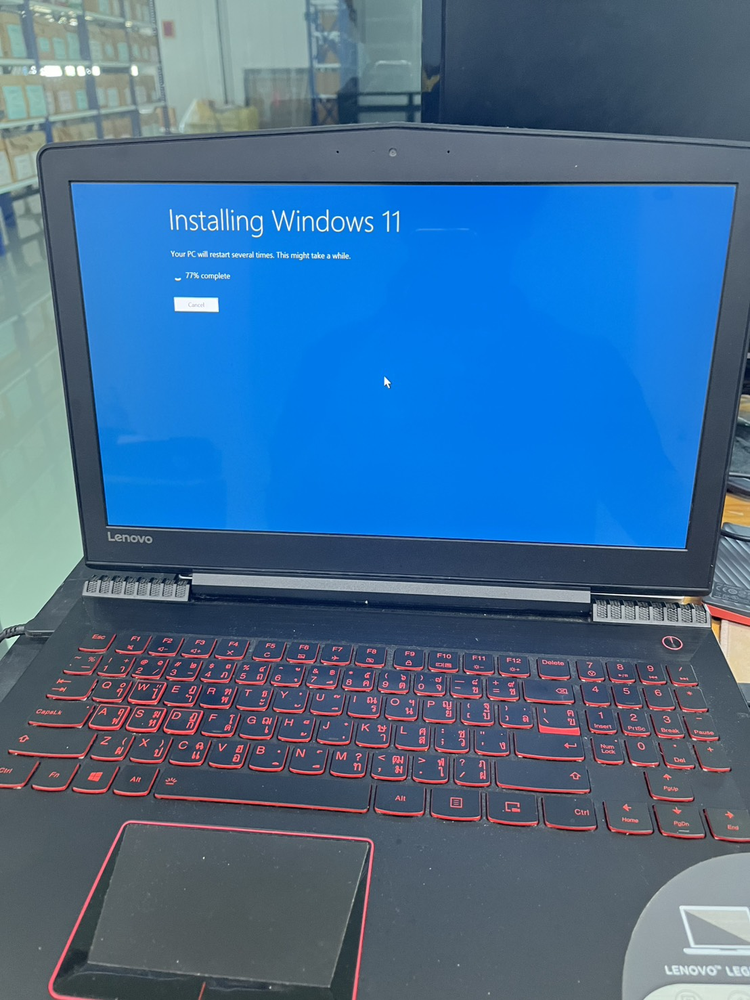
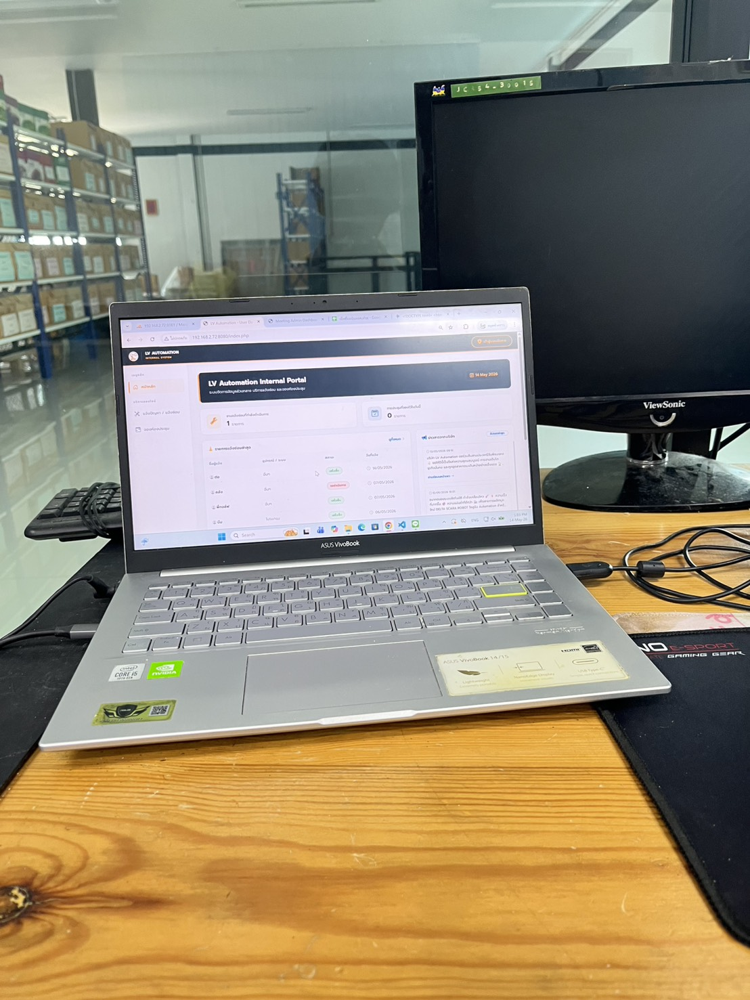
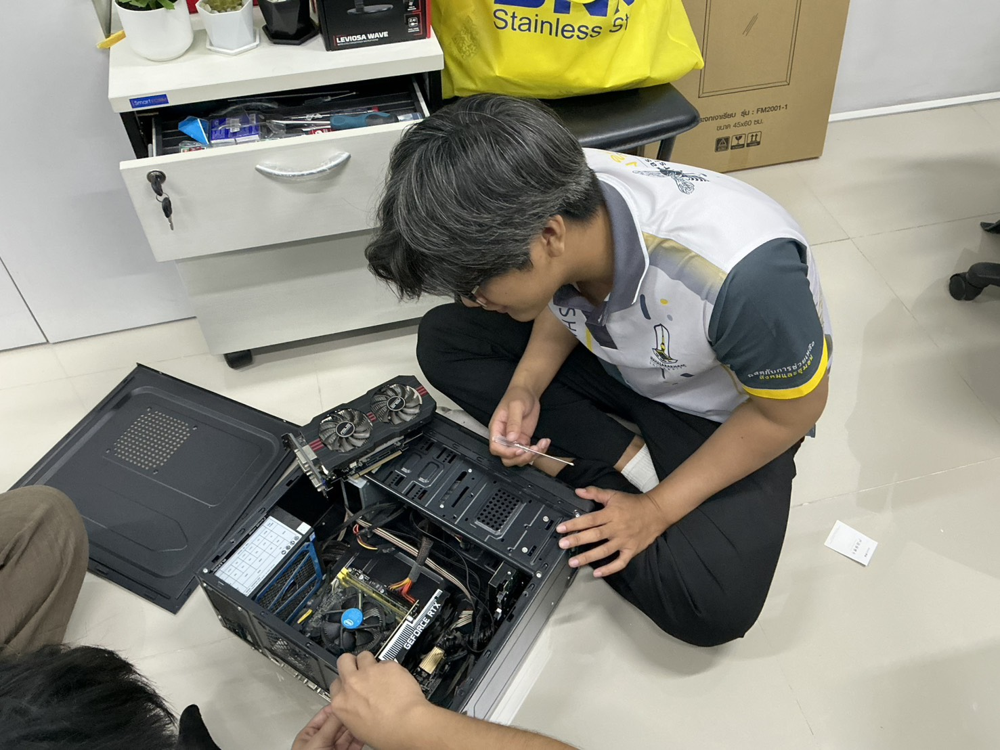
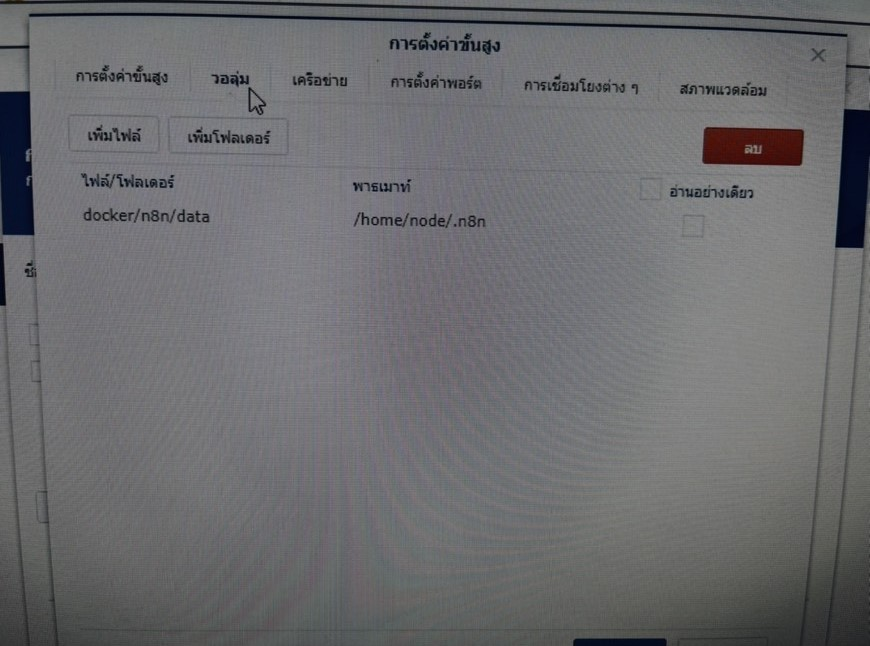
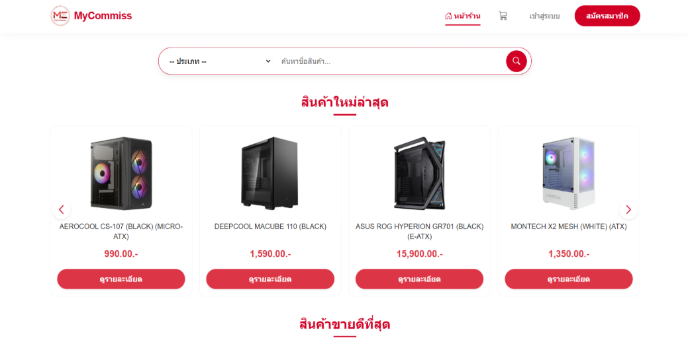
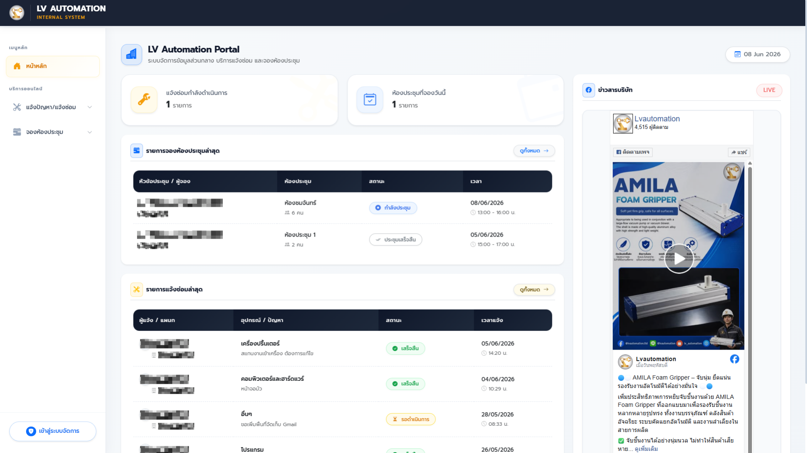
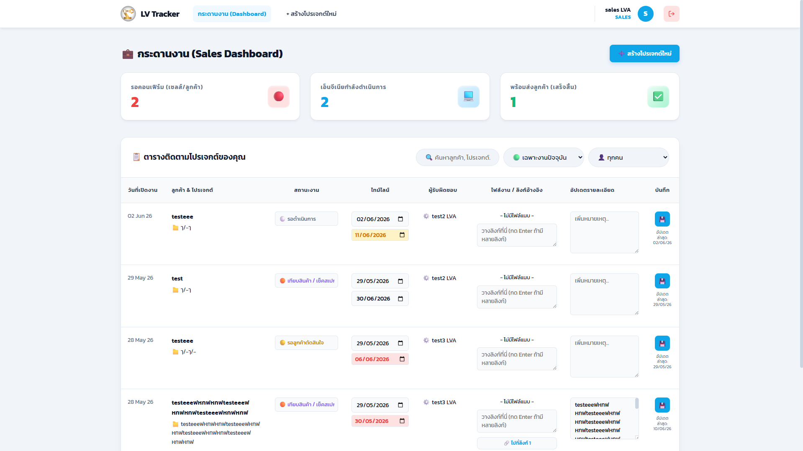

สวัสดีครับ
อนันตยศ อินทราพงษ์
นักศึกษาจบใหม่สาย IT ที่มีประสบการณ์ฝึกงานด้าน IT Support สนใจและมีแพสชันด้าน Infrastructure, Network มีประสบการณ์ในการแก้ไขปัญหา Hardware/Software รวมถึงการใช้งาน Synology NAS, Docker และระบบ Automation พื้นฐาน
01. ประวัติการศึกษา
มหาวิทยาลัยมหาสารคาม (Mahasarakham University)
พฤษภาคม 2026
- ปริญญาตรี บริหารธุรกิจบัณฑิต (B.B.A.) สาขาวิชาคอมพิวเตอร์ธุรกิจ คณะการบัญชีและการจัดการ
- เกรดเฉลี่ยสะสม (GPA): 3.41
- รายวิชาหลักที่ศึกษา: เรียนเกี่ยวกับด้าน Computer Network, Information Systems Security, Database System และ System Analysis and Design
- ประสบการณ์ระหว่างเรียน: มีประสบการณ์ด้าน Web Programming, Mobile Application Development และ System Development with Internet of Things (IoT)
02. ทักษะความเชี่ยวชาญ
Infrastructure & Network
IT Support
Automation & Tools
Web Development
03. ประสบการณ์การทำงาน
IT Support Intern
LV Automation
- พัฒนาระบบ "LV Automation Hub" ด้วย PHP, MySQL, HTML, CSS และ JavaScript สำหรับรับแจ้งซ่อม จองห้องประชุม และติดตามงาน
- ดูแลและพัฒนาระบบ Automation ด้วย n8n บน Docker Container เชื่อมต่อ LINE Messaging API
- ให้บริการ IT Support แก้ไขปัญหา Hardware, Software และเน็ตเวิร์กพื้นฐาน
บรรยากาศการทำงาน (Hands-on Experience)




ใบรับรองการผ่านงาน (Certificate of Completion)
เปิดดูไฟล์ PDF เต็มจอ04. ผลงานที่โดดเด่น (Projects)

Project จบ
E-Commerce & Automated Sales Dashboard
ระบบอีคอมเมิร์ซอุปกรณ์ไอทีพร้อมระบบสรุปยอดขายอัตโนมัติด้วยเทคโนโลยี n8n ช่วยประมวลผลคำสั่งซื้อและส่งแจ้งเตือนผ่าน LINE พร้อมบูรณาการ AI สำหรับตรวจสอบสลิปโอนเงิน และแสดงแดชบอร์ดสรุปยอดขายด้วย Looker Studio
Internal Tool
LV Automation Hub
ระบบศูนย์กลางสำหรับรับแจ้งซ่อมอุปกรณ์ไอที จองห้องประชุม และแจกจ่ายงานสำหรับพนักงานในแผนก IT ทำงานอัตโนมัติด้วย n8n บน Docker เพื่อแจ้งเตือนผ่าน LINE ทันทีที่มีการเปิด Ticket


กำลังพัฒนา (In Development)
LV Automation Tracking
เว็บแอปพลิเคชันสำหรับเชื่อมโยงการทำงานภายใน LV Automation เพื่อให้ Sale ติดตามการเขียนแบบของ Engineer พร้อมอัปเดตข้อมูลแบบเรียลไทม์ และมีระบบให้ Engineer อัปโหลดไฟล์วาดแบบต่างๆ เข้าระบบได้โดยตรง